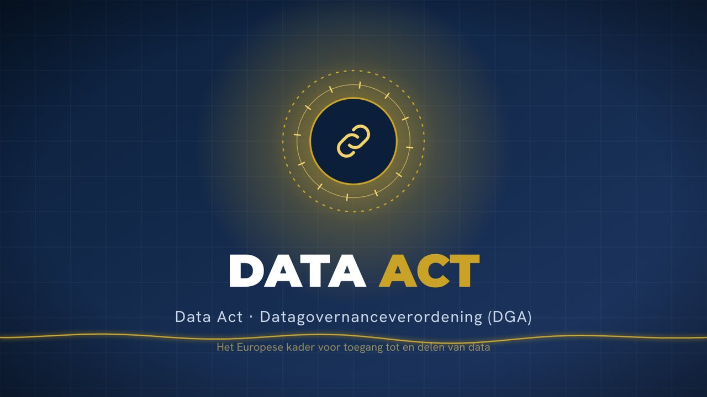

ARG
ARGARGOS › Regelgeving in 4 minuten › Data Act en DGA
Data Act en DGA in 4 minuten: België: de toezichthouder bereidt zich voor
De Data Act en de datagovernanceverordening vormen het Europese kader voor toegang tot data en het delen ervan. Industriële data zijn niet meer vanzelf van de fabrikant. In België bereidt de toezichthouder zich voor, maar de plichten gelden al.

- 0:00Van wie?
- 0:10De verordening
- 0:30Nationaal
- 0:49Data Act
- 1:01Plichten
- 1:23De DGA
- 1:40Data
- 2:01Europa
- 2:24Toezicht
- 2:39Wat te doen
Kerngegevens
- 12.9.2025 in de hele Europese Unie
- 24.9.2023 de DGA geldt
- 12.9.2025 de Data Act geldt
- 12.9.2026 toegang vanaf het ontwerp
- 12.1.2027 einde overstapkosten in de cloud
- BIPT Toekomstige toezichthouder
- FOD Economie Ter ondersteuning
- GBA Persoons- gegevens
Transcriptie
Volledige tekst van de voice-over
0:00 · Van wie?
Je tractor maakt data. Je machines ook. Je lift, je auto, je meter. Maar de fabrikant houdt ze. Van wie zijn ze, eigenlijk?
0:10 · De verordening
De Europese dataverordening, de Data Act, geldt in de hele Unie sinds 12 september 2025. Wie een verbonden product gebruikt, krijgt gratis toegang tot zijn data, en mag ze delen. En vanaf 12 januari 2027 mag geen cloudaanbieder nog rekenen voor overstappen.
0:30 · Nationaal
In België bereidt de toezichthouder zich voor, maar de plichten gelden al. Het BIPT hervormt zijn statuut om de autoriteit te worden. Samen met de FOD Economie. De GBA waakt over persoonsgegevens. Rechten kun je nu al voor de rechter afdwingen. En klanten vragen het al.
0:49 · Data Act
De Data Act en de datagovernanceverordening vormen het Europese kader voor toegang tot data en het delen ervan. Industriële data zijn niet meer vanzelf van de fabrikant.
1:01 · Plichten
Wat ze van de fabrikant vraagt. Producten zo ontwerpen dat de gebruiker bij zijn data kan. Vóór het contract informeren welke data ontstaan. Delen met de derde die de gebruiker kiest, tegen eerlijke voorwaarden. En bedrijfsgeheimen beschermen met afgesproken maatregelen. Niet-persoonsgegevens alleen zoals afgesproken met de gebruiker.
1:23 · De DGA
De datagovernanceverordening maakt het beeld compleet. Hergebruik van beschermde overheidsdata. Neutrale, geregistreerde databemiddelaars. En data-altruïsme, voor het algemeen belang. De Digitale Omnibus wil haar opnemen in de Data Act.
1:40 · Data
De data. 24 september 2023: de datagovernanceverordening geldt. 12 september 2025: de Data Act geldt. 12 september 2026: toegang vanaf het ontwerp. En 12 januari 2027: einde van overstapkosten in de cloud.
2:01 · Europa
In Europa is de kaart ongelijk. Duitsland: meer dan 700 klachten. Nederland: wet en toezichthouder. Denemarken: boetes alleen via de rechter. Frankrijk: overstappen uit de cloud voor nul euro. België bereidt zijn toezichthouder voor. En Spanje, Portugal en Italië hebben nog geen toezichthouder.
2:24 · Toezicht
In België wordt de toezichthouder het Belgisch Instituut voor postdiensten en telecommunicatie. De FOD Economie ondersteunt. Intussen kan de rechter de rechten doen naleven. En persoonsgegevens blijven onder toezicht van de GBA.
2:39 · Wat te doen
Wat nu te doen. Datafiches per product, een procedure voor toegangsverzoeken, eerlijke contracten en een exitplan voor de cloud. ARGOS toetst of de toegang echt werkt, met tests op de echte systemen en bewijs voor klant en toezichthouder. Data Act: data in dienst van wie ze maakt.
Veelgestelde vragen
Wat is Data Act en DGA?
De Data Act en de datagovernanceverordening vormen het Europese kader voor toegang tot data en het delen ervan. Industriële data zijn niet meer vanzelf van de fabrikant. De Europese dataverordening, de Data Act, geldt in de hele Unie sinds 12 september 2025. Wie een verbonden product gebruikt, krijgt gratis toegang tot zijn data, en mag ze delen. En vanaf 12 januari 2027 mag geen cloudaanbieder nog rekenen voor overstappen.
Wat vraagt Data Act en DGA?
Wat ze van de fabrikant vraagt. Producten zo ontwerpen dat de gebruiker bij zijn data kan. Vóór het contract informeren welke data ontstaan. Delen met de derde die de gebruiker kiest, tegen eerlijke voorwaarden. En bedrijfsgeheimen beschermen met afgesproken maatregelen. Niet-persoonsgegevens alleen zoals afgesproken met de gebruiker.
Wat zijn de belangrijke data?
De data. 24 september 2023: de datagovernanceverordening geldt. 12 september 2025: de Data Act geldt. 12 september 2026: toegang vanaf het ontwerp. En 12 januari 2027: einde van overstapkosten in de cloud.
Wat geldt er in België?
In België bereidt de toezichthouder zich voor, maar de plichten gelden al. Het BIPT hervormt zijn statuut om de autoriteit te worden. Samen met de FOD Economie. De GBA waakt over persoonsgegevens. Rechten kun je nu al voor de rechter afdwingen. En klanten vragen het al. In België wordt de toezichthouder het Belgisch Instituut voor postdiensten en telecommunicatie. De FOD Economie ondersteunt. Intussen kan de rechter de rechten doen naleven. En persoonsgegevens blijven onder toezicht van de GBA.
Wat moet een bedrijf nu doen?
Wat nu te doen. Datafiches per product, een procedure voor toegangsverzoeken, eerlijke contracten en een exitplan voor de cloud. ARGOS toetst of de toegang echt werkt, met tests op de echte systemen en bewijs voor klant en toezichthouder. Data Act: data in dienst van wie ze maakt.
Officiële bronnen
- Verordening (EU) 2023/2854 (Data Act) (EUR-Lex)
- Verordening (EU) 2022/868 (DGA) (EUR-Lex)
- Regelgevingsfiches van Software in a Box
Ga verder met
 CyFun en ISO
CyFun en ISOCyFun en ISO in 4 minuten: Bewijs is geen formulier
 AVG
AVGAVG in 4 minuten: Er wordt vooral beboet op de basis
 EHDS
EHDSEHDS in 4 minuten: Voor ziekenhuizen en fabrikanten
Stem en muziek gegenereerd met kunstmatige intelligentie (art. 50 AI-verordening). Algemene informatie, geen juridisch advies; stand van zaken november 2026, volgens de regelgevingsfiches van Software in a Box. Videoclips onder licentie van Envato.
Deze presentatie insluiten op een andere website: <iframe src="https://argos.softwareinabox.eu/nl-be/regelgeving/data-act-dga/presentacion/?embed=1" width="960" height="540" allow="autoplay; fullscreen" title="Data Act en DGA in 4 minuten: België: de toezichthouder bereidt zich voor"></iframe> met een link naar deze pagina.
Ook beschikbaar in: EspañolDeutschFrançaisFrançais (Belgique)ItalianoNederlandsPortuguêsDansk